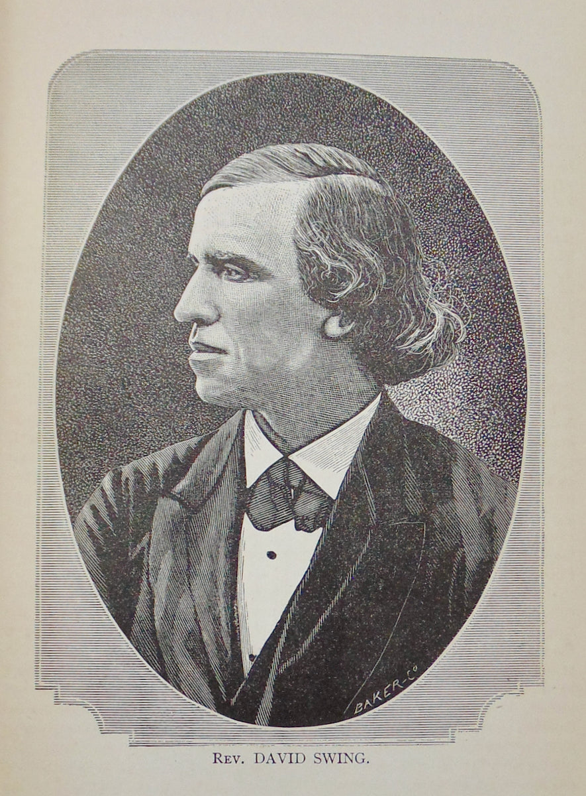

This second article in This Date in History examines and previews vital August dates in Chicago’s history. Mark your calendars with these historical dates in the business of beer, Chicago government planning, religion and song.
Charles Wacker, Businessman
Born on August 29, 1856 in Chicago
Chicago beer capitalist Charles Wacker was born in Chicago on August 29, 1856—he died on Halloween, October 31, 1929, in Lake Geneva, Illinois—making his fortune in the beer brewing business. Wacker’s “largely responsible for the two-level thoroughfare along the Chicago River that bears his name,” according to Chicago Portraits: Biographies of 250 Famous Chicagoans (Loyola University Press 1991) by June Skinner Sawyer.
A son of German immigrants, Wacker attended Chicago public schools and the Lake Forest Academy, studying music in Stuttgart, Germany, attending lectures at the University of Geneva in Switzerland and working as an office boy at a grain commodities firm, Moeller and Company. In 1880, he formed a partnership with his father to establish F. Wacker, and Son, a malting business. Two years later, Charles Wacker joined the firm of Wacker and Birk Brewing and Malting Company as secretary and treasurer with his father as president. When Wacker’s father died in 1884, Charles became president. In 1888, Charles Wacker was nominated for Illinois’ state treasurer but he chose to avoid politics and, in 1893, he instead opted to serve as one of the principal stockholders and directors of Chicago’s World’s Colombian Exposition celebrating the 400th anniversary of Christopher Columbus’s voyage to America, announcing Chicago’s arrival as a great city of the world.
Chicago’s historic exposition led architect Daniel Burnham to develop a method to adopt and promulgate the World Fair’s Chicago ethos, beauty and harmony, and, in 1907, Burnham persuaded the city’s private organizations to raise money to fund his vision, inspired by broad Parisian boulevards and grand parks. Burnham’s Chicago Plan, as it became known, called for the beautification of the lakefront, expansion of parks and widening of major north and south arteries into downtown Chicago. Wacker was chairman of the Chicago Plan, which was adopted in 1910.
Specifically, Wacker recommended removing South Water Street’s market—the city’s top produce district—to alleviate traffic congestion from the south branch of the Chicago River, replacing it with a modern double-decker thoroughfare. A president of Marshall Field and Company, James Simpson, became one of the first prominent citizens to recommend the radical name change of South Water Street changed to Wacker Drive to honor Charles Wacker while he was alive. The proposal was introduced in city council chambers in 1924 and the ordinance passed with a single dissenting vote. South Water market was relocated to the southwest side in Chicago two years later in 1926.
Construction of Wacker Drive and the opening of the North Michigan Avenue Bridge in 1920, drastically changing the city north of the river, making the area more accessible to the Loop, assuring that the future of the boulevard and adjacent streets would become an important commercial and retail district, which it did.
Charles Wacker was also president of various Chicago charities, director of the Chicago chapter of the American Red Cross and he was active in German culture in Chicago—serving as treasurer of the German Opera House as well as director of the German Old People’s Home and a member of German singing societies—and Wacker was a long-time resident of the north side of Chicago, residing at 2340 North Commonwealth Avenue. Wacker was 73 years old when he died.
Terence Teahan, Musician
Born: August 17, 1905
Musician of ability and renowned Chicago storyteller Terence Teahan promoted and added to the city’s Irish music scene, which he pioneered from 1928 when he first came from Ireland to Chicago to 1970 when he retired in Chicago. Teahan mastered music he heard as a boy at County Kerry’s informal Irish dances.
Eventually, he borrowed a battered accordion and performed “Miss McLeod’s Reel” during an amateur radio contest in 1940. He handily won the competition. Later, he played at dances, taverns and dancing schools and at weddings, charity events and various Irish functions around Chicago and throughout the Midwest, according to Chicago Portraits by June Skinner Sawyer.
With a reputation for being a kind mentor to younger musicians, Teahan was also a prolific composer, writing Irish polkas, slides, jigs, hornpipes and reels as well as co-authoring a collection of original compositions and poetry. His recordings include Old Time Music in America, Irish Music in Chicago and a self-produced cassette On the Hill of Memory. He worked for Chicago’s Sears, Roebuck and Company and Western Electric in Chicago as well as the Illinois Central Railroad, which hired him to work in its freight yards. Terence Teahan died in April 1989 at the age of 83.

David Swing, Presbyterian Pastor
Born: August 18, 1830 in Cincinnati, Ohio
Minister David Swing was a Chicago religious minister who challenged and changed the Presbyterian Church in its ministry and practices. Swing, who studied classical literature at Miami University in Oxford, Ohio, graduating in 1852, chose to study theology at a seminary in Cincinnati a year later. Later, he was offered and accepted a position to teach Greek and Latin and he taught there for 12 years while also beginning to preach in the area, preaching at churches throughout Southern Ohio. In 1866, according to Sawyer in Chicago Portraits, Swing agreed to become pastor at the Westminster Presbyterian Church in Chicago.
Apparently, he was “a forceful and articulate speaker,” and David Swing quickly attracted a large and devoted following. His sermons were published weekly in local newspapers and, in 1871, Westminster Presbyterian Church merged with another Presbyterian church to form the Fourth Presbyterian Church at Grand and Wabash Avenues. Shortly after the merger, the church was destroyed in the Chicago Fire. Eventually, the congregation moved into a permanent home at Rush and Superior Streets in January of 1874.
This was a time of skepticism in religion throughout the nation. The Presbyterian Church, in particular, was the subject of criticism—and Swing was one of the critics, attempting to personalize the church and update its teachings to make the Presbyterian Church more relevant to people’s daily lives. In 1873, Swing became the chief writer for the Alliance, a non-denominational weekly with “a liberal bent.” The publication helped spread his beliefs.
A year later, the Reverend Dr. Francis L. Patton, editor of the Interior, a Presbyterian journal, accused pastor Swing of heresy, filing charges against him before the Chicago Presbytery. Swing, Patton insisted, failed to teach the essence of the gospel in his role as Presbyterian minister. A trial was held in the lecture room of the First Presbyterian Church at Indiana Avenue and 21st Street. The trial of Presbyterian pastor David Swing, accused of heresy, captured Chicagoans’ attention for weeks, making national news.
Swing was ultimately acquitted of all charges. Reverend Patton pledged to appeal to the Synod of northern Illinois, the governing church body. Despite support from Swing’s congregation and ministry at the Fourth Presbyterian Church, which requested that he continue his ministry, Swing chose to resign rather than endure the ordeal all over again. Pastor Swing preached at the Central Church, which opened in 1879 as a new, independent church at the corner of State and Randolph Streets, until his death in October of 1894 in his home on Lake Shore Drive; David Swing was 64 years old.
Sources: Chicago Portraits: Biographies of 250 Famous Chicagoans (Loyola University Press 1991) by June Skinner Sawyer; foreword by Bill Kurtis.